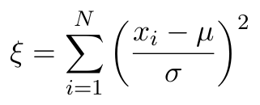
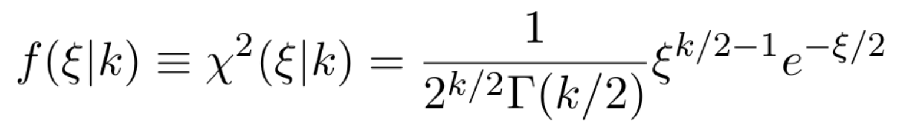
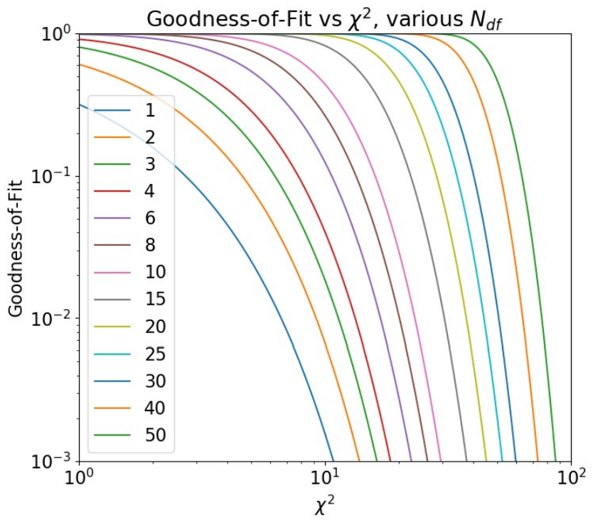

In a jupyter notebook named chisquared.ipynb, write some python code to confirm an assertion made in lecture: Suppose I draw a set of N random variables {xi} from a normal (Gaussian) distribution with mean μ and width σ. If I define ξ as the weighted sum-of-squares deviation from the mean:

Then ξ will follow a χ2 distribution with k = N degrees of freedom.

Γ represents the gamma function, but it is easier to generate the χ2 PDF directly using scipy.stats.chi2.
For starters, have your code do the following
Here are a few other things to try.
As a check of your understanding of the scipy.special.gammaincc function, reproduce the plot below of Goodness-of-Fit vs χ2 for various numbers of degrees of freedom.

Submit Exercises 1 and 2 above in a single Jupyter Notebook chisquared.ipynb.
submit p4730 lab11 chisquared.ipynb